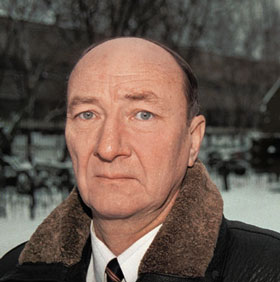
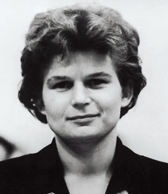
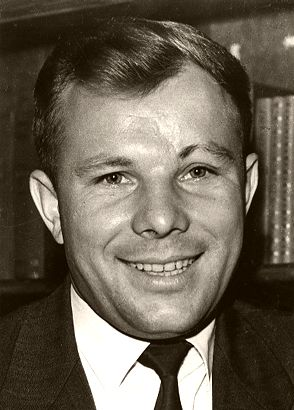
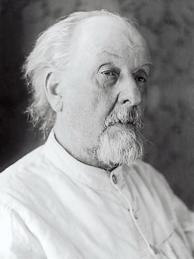
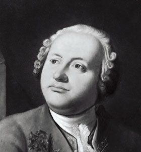

| http://hedrook.vho.org/library/salah.htm |
|  |
Его давно грозятся убить. И это странно, потому что ну кому поперек пути мог встать простой научный работник? Ан нет - встал. Кандидат наук Гелий Малькович Салахутдинов покусился на самое святое - историю отечественного естествознания. И до того многих огорчил своими исследованиями, что один аспирант прямо в институте накинулся на Гелия Мальковича с кулаками. Хорошо, Гелий Малькович раньше боксом занимался, иначе неизвестно, чем бы закончилась его научная карьера. А аспирант, кстати, в этой научной дискуссии отделался всего лишь разбитыми очками... Да, но отчего же такой накал страстей вокруг исторической науки?
А вокруг исторической науки всегда страсти кипят, это не вопрос. Наш журнал давно занимается темой истории. Мы давали слово и поклонникам фоменковской теории, и антифоменковцам, публиковали в нескольких номерах интереснейшие профоменковские рассуждения Гарри Каспарова, развенчивали исторические мифы времен Второй мировой, говорили о преподавании истории в школе, даже занимались вариативной историей - рассуждали о том, что было бы, если бы история где-то поменяла свой ход. И всегда наши статьи вызывали самые живые отклики у трудящихся. В основном трудящихся на ниве исторической науки. Но и обычные граждане очень гневались, когда мы разоблачали некоторые просоветские мифы, созданные сталинской историографией. Боюсь, сегодняшняя наша статья также вызовет море злобных откликов. Во всяком случае, очень на это рассчитываем...
Итак, сегодня проездом из Звездного городка в Москву впервые на нашей исторической сцене весь вечер поет и пляшет человек трудной судьбы, но при этом кандидат технических наук, старший научный сотрудник Института истории естествознания и техники РАН Гелий Салахутдинов. Прошу!..
- Гелий Малькович, насколько я понимаю, вы занимаетесь хорошо задокументированной, тихой и спокойной областью истории - историей техники. И вдруг такие скандалы. Как начался ваш крестный путь в исторической науке?
- Началось все с того, что в 1984 году я взял исследовательскую тему по истории мировой космонавтики. И оказалось, что вся наша отечественная история космонавтики сфальсифицирована.
Вся наша история космонавтики поддерживает легенду о том, что в результате напряженного соревнования ноздря в ноздрю двух наших стран в космосе Советский Союз с честью выиграл эту гонку у США, запустив первый спутник и так далее... И никто у нас не знает - это тщательно скрывается, - что еще в 1946 году Вернер фон Браун, отец немецкой ракеты "Фау-2", предложил американцам проект запуска первого искусственного спутника Земли. И американцы отказались от этого предложения, справедливо рассудив, что военного применения спутник иметь не может. В 1954 году фон Браун опять предлагает запустить спутник. Ему опять отказывают.
В 1957 году фон Браун уже говорит: дайте мне 90 дней, и я запущу спутник. Ему снова отказывают. А у него уже ракета готова была! (Ракета фон Брауна "Юпитер-С" (Missile 27), успешно запущенная 20 сентября 1956 года, поднялась на высоту свыше 1.000 километров. Если бы в последней ступени вместо песка было топливо, она могла бы вывести на орбиту первый искусственный спутник Земли. - П.Х.) И вот 4 октября 1957 года свой спутник запускает СССР... Американцы дали фон Брауну разрешение на запуск только после того, как у нас собака Лайка полетела.
- Но все-таки первый спутник был наш!
|  |
- Да, первая болванка летала наша. Но все первые прикладные спутники - американские. Первый научный спутник был американский, первый связной - американский, навигационный, метеорологический - тоже американские. Первая орбитальная станция – американская. (Вообще-то первая орбитальная станция, "Салют", запущенная в 1971 году, была советской. Американцы тогда были слишком заняты полётами на Луну, и у них не было времени на околоземную возню. Кстати, первые космонавты, побывавшие на "Салюте", - Георгий Добровольский, Владислав Волков и Виктор Пацаев - погибли при возвращении на Землю, о чём стараются не вспоминать. - П.Х.) Первый крылатый возвращаемый аппарат - американский. Первые люди на Луне - американцы. А наша ракета "Н-1", которую готовили для полета на Луну, на всех четырех запусках успешно взрывалась со страшной силой.
Американцы шли дорогой практичности, а мы символы запускали. Первую болванку - спутник. Первую женщину, перепуганную до слез. Она там расплакалась, у нее начались сопли - в общем, полило из всех дыр. Она кричала: "Мама! Мама!.." (Также она грозилась покончить с собой. - П.Х.) И после этого Королев сказал: "При мне больше ни одной бабы в космосе не будет!" И выгнал их всех из отряда космонавтов. Там еще четыре штуки было... (Если быть точнее, Королёв женщин из отряда космонавтов не выгонял, но, всё равно, женщины при нём в космос больше не летали. Светлана Савицкая, вторая советская космонавтка, полетела в космос почти через 20 лет после Терешковой, уже после смерти Королёва. - П.Х.)
- А чего девушка так испугалась?
- Страшно. (У неё на орбите, вдобавок ко всему, началось женское недомогание. - П.Х.) Ведь первые полеты - это идиотизм был какой-то, у них вероятность возвращения составляла 50%! (Чуть больше. - П.Х.) Когда, например, летал Гагарин, было серьезное опасение, что не сработает тормозной двигатель. На этот случай аппарат обеспечили водой и питанием на десять суток, рассчитывали, что он затормозится атмосферой за это время и упадет сам по себе. Однако орбита оказалась выше расчетной, и если бы тормозной не сработал, Гагарин бы погиб - ему не хватило б запасов еды и воды, чтобы дождаться естественного торможения. Гагарин исполнял роль живого символа. Собачку послали, теперь надо человечка... (Кстати, не факт, что Гагарин вообще был в космосе. Но это отдельный разговор. - П.Х.)
В истории нашей космонавтики кругом фальсификация. С тем же Гагариным. На пресс-конференции журналисты его спрашивают: вы как приземлились, на парашюте или в кабине корабля? И наш первый космонавт Гагарин начинает выкручиваться. Говорит, мол, главный конструктор предусмотрел оба варианта спуска с орбиты. Не ответил прямо на вопрос.
- А какая разница?
|  |
- Это для установления международного рекорда надо было. Международная авиационная федерация засчитывала рекорд дальности, только если пилот опустился в кабине корабля. И что вы думаете? Взяли и обманули всю мировую общественность - написали, что Гагарин опустился в кабине корабля. А он спустился на парашюте - катапультировался из кабины! (Есть версия, что космонавт, действительно отправившийся в космос в тот день, погиб во время полёта, а Гагарина спустили на парашюте из самолёта. - П.Х.) Но самое смешное - через несколько лет наши действительно создали корабль "Восход-1", на котором космонавты садились уже в кабине. И СССР... официально объявил, что впервые в мире совершена мягкая посадка людей в кабине корабля! Совершенно забыв, что несколько лет назад Гагарин уже "садился" в кабине.
- Союз славился очковтирательством. Особенно военные и политики...
- Космонавтику у нас старались подгрести под политику. Полет Титова лично Хрущевым был выбран таким образом, чтобы под его шумок возвести Берлинскую стену. Под шумок Терешковой гасили скандал с размещением ракет на Кубе... Знаете, как назвали американцы нашу программу "Восток-Восход"? Технологической софистикой. (Это сказал Курт Дебус, американский специалист немецкого происхождения, первый директор Космического центра им. Кеннеди. - П.Х.)
Мы же их постоянно дурачили, врали. Например, если запустить второй спутник ровно через сутки после первого, они окажутся рядом на орбите. Мы такое сделали и на весь мир раструбили, что наши аппараты такие классные, что могут сближаться на орбитах. В Америке был шок - русские умеют строить аппараты, меняющие орбиты!..
Потом мы в одноместный корабль загнали трех космонавтов. Они там буквально друг у друга на руках сидели. Для того чтобы их разместить, пришлось снять с космонавтов скафандры и демонтировать из кабины катапультируемое кресло. Зато американцы ахнули - русские уже делают большие корабли для групповых полетов!.. Им и в голову не приходило, что это надувательство, что люди полетели "голые", как пушечное мясо...
Вот когда все это раскрылось, американцы и назвали нашу космическую программу технологической софистикой.
- Что же было потом, после того, как вы переписали историю космонавтики?
- А дальше я занялся Циолковским. Циолковский также целиком сфальсифицирован.
- Как же это с ним случилось?
- Из-за революции. К революции Циолковский уже был разоблачен научным сообществом как лжеученый и псевдоизобретатель. Против него выступали Жуковский, Ветчинкин, Императорское русское техническое общество... Что спасло этого провинциального полуграмотного мечтателя? В 1921 году Ленин подписал постановление о присуждении Циолковскому персональной пенсии - совершенно случайно. Там длинная была история. За Циолковского хлопотали знакомые военные - полуграмотные кавалеристы - и два земляка из "Калужского общества любителей природы местного края", которые ходили по инстанциям, - учитель и врач. Когда собрался совет по присуждению персональных пенсий, посмотрели - все подписи собраны. И проголосовали.
Циолковский был награжден пенсией "за особые заслуги в области авиации". А по положению этот документ должны были визировать все члены правительства, в том числе и Ленин. Ну а раз подпись Ленина, историки стали делать из городского сумасшедшего великого ученого. Последняя критическая публикация о Циолковском была в 1934 году, когда издали его избранные работы, а в предисловии стояла статья профессора Моисеева из академии Жуковского, который просто высмеял "труды" Циолковского по аэродинамике и естествознанию.
Когда я сам стал смотреть работы Циолковского, то с ужасом увидел, что этот "ученый" умудрился ни одной формулы не вывести без ошибки. Единственная правильная формула, которую почему-то приписывают Циолковскому, - уравнение движения точки переменной массы - принадлежит Мещерскому. Мало того, она и Мещерскому-то не принадлежит, строго говоря! Ее выводили на экзаменах за пятьдесят лет до этого студенты Кембриджского университета.
|  |
- Я знаю, что Циолковский был шизофреником. Мне попадались его "философские" работы. Когда я в первый раз прочитал их, понял, что я уже видел нечто подобное: по редакциям ходит уйма подобных циолковских со своими трактатами. Они часто публикуются в "МК" в рубрике "Там, за горизонтом".
- У Циолковского был серьезный сдвиг. Он сам об этом писал: "Я получил нервное расстройство, такое сильное, что совсем разучился бегать, и это отразилось на моих детях". Я решил проверить это его признание и убедился, что у Циолковского почти все в роду были сумасшедшими. Из шести его детей двое покончили жизнь самоубийством. Один всю жизнь хотел проколоть себе барабанную перепонку, чтобы стать таким же гениальным, как его отец. Еще один был попросту слабоумным...
- Можно было не трудиться с дурной наследственностью. Диагноз Циолковского виден как на ладони в его трудах и воспоминаниях. Я помню, он сам описывал, как ему мерещилось слово "рай", написанное на небе. А уж его философские взгляды...
- Да, у него просто жуткая философия. Суть ее в следующем - когда человек умирает, его атомы рассеиваются по всей Вселенной, а потом поселяются в какое-то другое живое существо. Так начинается вторая их жизнь в другом обличье. И если умершее существо было счастливым, значит, и атомы будут счастливые, и новая жизнь нового существа будет счастливой. Если атомы несчастные - наоборот. И задача человечества - уничтожить всю несчастную жизнь на Земле и в космосе. Далее Циолковский описывает, как, кого и в каком порядке нужно убивать. Я процитирую: "больных, калек, слабоумных, несознательных... диких и домашних животных, насекомых..."
И вот этот шизофренический бред наши циолковеды и циолколюбы вводят в ранг философии - научного космизма. Каждый год проходят Циолковские чтения в Калуге - "По разработке научного наследия и развитию идей Циолковского".
- Все верно вы говорите, но у нас так много глупостей в стране творится, отчего же ваши исследования вызвали такую злобную реакцию, причем не только в научном мире?
- Я написал книгу "Блеск и нищета Циолковского", не успел даже еще издать ее, как на меня набросились... На еще не изданную книгу - вещь для нашей науки беспрецедентная! - сразу была опубликована куча рецензий, в которых не содержалось ни одного научного аргумента против меня. А была только ругань. Я процитирую. Вот некий Григорий Хозин - как тут про него сказано, "выдающийся специалист в области гуманитарных аспектов космонавтики", между прочим, профессор! - пишет про меня в своей ругательной брошюре: "Меня до сих пор бьет дрожь, как можно, будучи россиянином, хотя и носящим фамилию Салахутдинов, поливать дерьмом величайшего гения человечества?"
- Больше всего мне понравилось "...хотя и носящим фамилию Салахутдинов".
- Кстати, россиянин Циолковский, которого Хозин защищает, тоже был наполовину татарином, хотя и носящим польскую фамилию... На меня потому так накинулись, что многие люди кормились и до сих пор кормятся с исторических легенд. Если бы в 60-е годы знали, что Циолковский не гений, а псих, разве построили бы ему в Калуге музей, глянув на который, иностранцы в один голос спрашивают: сколько же это стоит? Вы не были в Калуге? Это Дворец съездов! Рядом гостиница "Интурист". Дорогу построили. Финансирование было мощное. Сотни людей на этом кормились и кормятся до сих пор. На меня выходило начальство из города Калуги с угрозами...
- Но дворец покойному построили не за его "философские" труды, а за принципы реактивного движения, за космос, за придуманные им ракеты...
- Ракеты существовали с XIII века. Причем не придуманные, а реальные, твердотопливные, пороховые. Циолковский это знал. Он читал брошюру морского офицера Федорова, на которую неоднократно ссылался. Что сделал Циолковский? Циолковский предложил сесть на ракету и полететь на ней в космос. Но первое предложение по этому поводу сделал физик и писатель Сирано де Бержерак еще в 1648 году. (Китаец Ван Ху, по легенде, пытался взлететь на 150 лет раньше. – П.Х.) Дальше был Жюль Верн с тем же предложением. Был китаец Ван Ху... да масса людей!.. Циолковский не придумал ничего нового.
- Я читал, что Циолковский первым придумал многоступенчатые ракеты.
- Наглое и циничное вранье! Уже в XVIII веке такие ракеты существовали в проектах. А впервые патент на многоступенчатые ракеты получил Роберт Годдард в Америке в 1914 году. Немного позже, в 1923 году, выходит книжка немецкого профессора Оберта, который предложил двухступенчатую ракету для полета в космос. И только спустя четыре года своей идеей разрожается наконец господин Циолковский. Да к этому времени вся страна уже знала про многоступенчатые ракеты! Потому что газета "Правда" неоднократно писала об идее "немецкого профессора Оберта, который придумал способ полета в космос"! Но Циолковский "Правды" не читал...
Да и не придумывал Циолковский никаких многоступенчатых ракет. Знаете, что на самом деле предложил Циолковский? Он предложил одновременно запустить 512 РАЗНЫХ ракет, которыми управляют 512 пилотов. Когда топливо израсходуется наполовину, ракеты как-то встречаются в воздухе попарно - и половина ракет переливает остаток топлива в другие. Пустые ракеты с пилотами падают, остальные летят, пока опять не выработают полбака. И так далее. Космоса достигает одна из 512 ракет и один пилот. Бред сивой кобылы!
Даже сочувствующий Циолковскому популяризатор его трудов Перельман не выдержал и в своей книге в 1937 году написал: да надо их соединять, ракеты! И тогда не понадобятся 512 пилотов, а хватит одного, и проще будет отбрасывать отработавшие ракеты, "как это и предлагали Годдард и Оберт".
- Ну хоть что-то новое в науке сказал несчастный глухой сумасшедший из Калуги?
- Сказал. Предложил поставить трубу на колесики и толкнуть с горы. И тогда, по Циолковскому, струя воздуха, протекающая через трубу, создаст реактивную тягу, и труба будет ездить вечно!.. Он даже не понимал принципа действия ракетного двигателя, этот деревенский фантазер. Вы знаете, что Циолковский проучился в гимназии всего четыре года, причем два из них в одном классе?
- Основоположник теоретической космонавтики... Ладно, вот вы написали правдивую книгу. И?..
- За свой счет, между прочим, это была моя внеплановая тема... Написал и по своей наивности предложил в комиссию Циолковского. Думал, открытие сделал, переворот. Думал, ухватятся. О Циолковском ведь написано ни много ни мало 800 книг - и ни одной правдивой... И тут началась такая истерия!
Газетные статьи, где меня поливали за поругание святых имен... Разгромные отзывы на мою книгу разных "ученых". Один профессор так расстарался, что написал ругательный отзыв на раздел... которого вообще в моей книге не было! У нас в институте была принята осуждающая меня резолюция. Мне систематически грозят увольнением. Начали распускать слухи, что я "нехороший человек"...
Ну ладно, пусть я "нехороший человек", но оставьте мою личность в покое, ответьте по существу, как полагается в научном сообществе. Так нет!.. И я их понимаю, аргументов-то против меня нет: я основываюсь на трудах самого Циолковского.
Доходит до смешного. Вышла у меня статья в "Независимой газете". И директор нашего института - бывший комсомольский работник, привыкший священных коров защищать, - звонит в редакцию Андрею Ваганову...
Звонит, значит, говорит, что статья ошибочная, а вместо аргументированной критики начинает Андрею рассказывать... какой я плохой человек. Ваганов меня встречает, хохочет, говорит: "Пиши еще!.."
Кстати, прочитав эту статью, меня начал искать профессор Йельского университета через ленинградское отделение нашего института. А ему там говорят: мы, конечно, дадим вам координаты этого Салахутдинова, но вы должны знать - он очень нехороший человек.
Звонит этот профессор мне, просит о встрече. Я отвечаю: я, конечно, с вами встречусь, но вы должны знать - я очень нехороший человек. Он смеется, говорит: а мне уже сказали...
- Мне очень понравилось, как про вас этот дядька написал в разгромной брошюрке... Зачитайте еще пару мест из бессмертного.
- Вот, пожалуйста, чудный момент есть... Хозин сначала обращает внимание на то, что Циолковский был пацифистом и не хотел работать на войну, а потом пишет: "А может быть, нам (Хозину и военным. - А.Н.) сесть за стол вместе, положить творческое наследие Циолковского, положить его философские работы, поговорить с этими господами в погонах и сказать им: может быть, есть более эффективное применение этому потенциалу?"
Представляете? Сидят Хозин и куча генералов в погонах за столом переговоров. За генералами пушки, бомбы, а Хозин им труды Циолковского на стол! А давайте-ка мы, господа генералы, сделаем вечную ракету из трубы на колесиках, с горки столкнем... Идиотизм. Доктор наук, между прочим.
Вот еще прелестное место: "Циолковский должен быть познан как целостная социо-, политико-, философско-, гуманитарно-нравственная копилка сокровищ цивилизации". Ничего себе? Как он их приватизировал ловко, сокровища цивилизации... Копилка!
Потом еще на меня сильно наезжала эта госпожа... Мельпомен... э-э... такая девушка-философиня есть, забыл...
- Мапельман.
- Да! А откуда вы знаете?
- Она у нас философию в институте читала. Такая приличная с виду. И чего это она на вас набросилась?
- Так она как раз диссертацию свою докторскую защищала про "философа" Циолковского - русский космизм. Что ж ей теперь, признаваться, что она доктор не философских, а психиатрических наук?
- Но, я полагаю, на Циолковском вы не остановились?
|  |
- Не остановился. После того как меня стали травить, ко мне стали подходить втихую наши сотрудники и говорить: слушай, раз уж ты такой смелый, посмотри - там и с Ломоносовым что-то не то творится. И с Поповым. И электрическую дугу, кажется, не Петров открыл... Я стал смотреть документы. Точно, никаких открытий Ломоносов не делал!..
- Под дых... А мы в школе проходили, что он открыл закон сохранения массы.
- Закон сохранения массы открыл Лавуазье. А все ломоносовские работы по химии и физике - полуграмотные фантазии. Ломоносов был просто талантливым администратором. Он основал университет, организовывал научные экспедиции. Сам же по себе был довольно безграмотным человеком, не знал математики, к концу жизни спился, приходил в Академию наук и устраивал там пьяные дебоши.
- Как мне нравится вас слушать!
- То же самое открылось и по другим персонажам! Оказалось, действительно, не Попов радио изобрел...
- Маркони?
- Его вообще никто не изобретал! Так же, как парашют, вертолет или шестерни... Первый патент на устройство по передаче сигналов, основанное на электромагнитной индукции Фарадея, взял Эдисон. Он же создал приемно-передающее устройство, работающее на расстоянии до 200 метров. Поддерживал связь между берегом и судном на рейде, вокзалом и приближающимся поездом. Вообще же Герц, открывший электромагнитные волны, первым держал в руках приборчик, который передавал электромагнитные сигналы на расстояние.
Потом русский журнал "Электричество", англичанин Крукс и серб Тесла практически одновременно заявили, что на основе герцевых волн можно создать приборы дальней связи. Выходить на космос, передавать сообщения на другую сторону земного шара. Тесла изобретает антенну, рисует схему радио... Единственное, что Тесла не смог сделать, - найти хороший приемник, он использовал проволочное кольцо. Зато эту задачу решил англичанин Брантли - он придумал в качестве приемника трубочку с металлическим порошком.
- Я ее помню. Эту трубочку в черно-белом фильме про Попова показывали. Там ее еще молоточек от будильника почему-то все время встряхивал.
- Этот молоточек с часовым механизмом придумал англичанин Лодж, а не Попов, кстати... И это было продемонстрировано в Англии. Про английские опыты узнают Попов с Маркони, начинают их повторять, увеличивая подъем антенны и мощность сигнала. Это все, что они выдумали своего. Вопрос: кому принадлежит приоритет в изобретении радио?
То же и по другим персонажам... Русский ученый Петров никакой электрической дуги не открывал. Дугу открыл Мейджер - россиянин, но английский подданный, поэтому его, конечно, по боку, а Петрова назначили первооткрывателем... Черепановы свой неудачный паровоз начали строить после поездки в Англию, где увидели паровоз. Ползунов изобретателем паровой машины не был, она была изобретена за пятьдесят лет до него... Слизать-то он машину слизал, но нужной технологии обработки металлов в России не было, и поршень просто болтался в цилиндре, машина не работала...
Не было никакого ленинского плана ГОЭЛРО. Этот план электрификации был придуман еще при царском правительстве. Куда ни ткнись - везде вранье.
- Как же такое могло произойти с нашей историей?
- Очень просто. По прямому указанию Сталина в 1946 году русская и советская история науки и техники стала переписываться. В рамках борьбы с космополитизмом и низкопоклонничеством перед Западом...
Короче, когда я все это понял, то сразу начал об этом писать - в основном в прессе, потому что в нашем журнале "Вопросы истории естествознания и техники РАН" я стал персоной нон грата. Потому что главный редактор журнала - директор нашего института. И я его по-человечески понимаю: как он может Салахутдинова публиковать? После того как Горбачев объявил перестройку, и общественные науки и история стали очищаться от уродливых наплывов тоталитаризма, в истории естествознания и техники ничего подобного не произошло. Спрашивается, чем же вы занимались все эти годы? Поддерживали мифы?
- Неужели вся наша история науки сфальсифицирована?
- Полностью. Все изобретения, вся наука пришли к нам из-за границы. Вдумайтесь: на целый огромный Советский Союз - всего восемь нобелевских лауреатов. В крохотной Дании - восемь, в Швейцарии - двенадцать. В Америке - сто пятьдесят четыре! А у нас - восемь. А вот в литературе примерное равенство: у американцев семь, у нас пять лауреатов.
- Может быть, они там засуживали наших научных ребят?
- Напротив, Нобелевский комитет и вообще зарубежные ученые очень наших ученых любили и сочувствовали им, понимали, как тяжело работать в тоталитарной стране. Порой даже давали премии, которые, на мой взгляд, и давать-то не надо было. Я бы, например, Капице и Ландау не дал Нобелевской премии.
- А почему на вас аспирант набросился с кулаками прямо в стенах института?
- Его любимая девушка работает в Калуге в Музее Циолковского. А я покушаюсь на ее сумасшедшего кумира. И он, защищая свою девушку, напал на меня, гонителя Циолковского.
- Как все запутано. Но вы же уже пожилой человек. А он молодой. Как же вы выжили?
- Зато я боксом когда-то занимался. Так рукой его отбросил, он отлетел, очки у него упали. А потом он сам на них наступил. Взял разбитые очки и пошел писать донос на меня. А я сказал: пускай в суд подает!
- Каковы же ваши планы на будущее, Гелий Малькович?
- Буду бороться дальше.
- Спасибо вам за вашу борьбу. За то, что помогаете нам по капле выдавливать из себя циолковских...
Александр НИКОНОВ
"Огонек", №50, 10 декабря 2001 г.
В материале использованы фотографии Виктора Бреля, Александра Джуса, из архива "Огонька"
ОБИДЕЛИ ДЕДУШЕК!
(А Баба-Яга - против!)
Обращение Научного мемориального центра "ПИОНЕРЫ РАКЕТОСТРОЕНИЯ" к Путину
(Публикуется в неприкосновенности)
"Уважаемый Владимир Владимирович!
К Вам лично мы сотрудники НМЦ-музея "ПИОНЕРЫ РАКЕТОСТРОЕНИЯ" РОМАНЕНКО Борис Иванович и Кабан Микола Михайлович обращаемся в связи с крайне неотложными государственно важными заботами.
Мы уверены как и все люди Планеты ЗЕМЛЯ, Вы знаете, что ракетная Космическая Техника основана на идеях и разработках Великого Россиянина К.Э. Циолковского, без использования которых никакие ракеты в нашей стране не могли бы летать в Мировом Космическом пространстве.
А вот нашелся в нашей стране мерзкий негодяй некий Салахутдинов Г.М., вольготно выращенный в нашем обществе, которому наш отечественный журнал "ОГОНЕК" № 50 декабрь 2001 г. на четырех полосах-страницах предоставил возможность гнусно клеветать и оскорблять имя Гения Мирового значения, публично обзывая его сумасшедшим и психом.
Попутно этот мерзавец с корреспондентом "ОГОНЬКА" Александром Никоновым гнусно оскорбляет и всех наших Великих Ученых, изобретателей, космонавтов и всю интеллигенцию, рабочих и крестьян, Российскую Науку.
Оставить молча, без решительного человеческого правового возмущения и реагирования на эти дикие наскоки на наш Великий Народ НЕЛЬЗЯ. Весь народ наш не поймет, если пассивно все наши правоохранительные органы и Суд пройдут мимо, соответственно не среагируют, не привлекут клеветника и его пособников к ответственности, а пассивно смолчат.
Это будет и крайне непедагогично для нашего молодого поколения, нашего Отечества, нашей Науки и Культуры, предательством перед ушедшими поколениями людей нашей Великой Родины - Страны.
Настоятельно убедительно предлагаем и просьба наша лично к Вам, Владимир Владимирович, как Президенту РФ принять незамедлительные действенные решительные меры, привлечь к строгой ответственности до крайности наглых клеветников на нашу Отечественную Науку и Культуру, поручить это разбирательство Федеральному Собранию, депутатам Государственной Думы и опубликовать для всенародного обсуждения возмущенной общественностью нашей страны.
В связи с этим просим Вас лично принять нас с документами.
С уважением, Академик Российской Академии Космонавтики
Имени К.Э. Циолковского Б.И. Романенко. 07.08.1912 г.р.
Ведущий Конструктор Изобретатель СССР - РФ
Народный Заседатель в суде М.М. Кабан 12.12.1927 г.р."
"Огонек", №30, 2002 г.
| http://hedrook.vho.org/library/salah.htm |